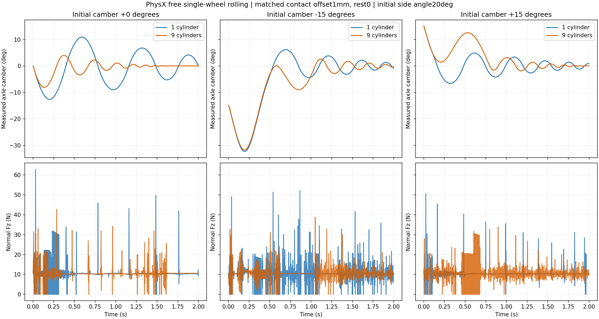

Native readback: the single-cylinder automatic contact offset is1 mm; nine uniform axial cylinders use approximately0.122625 mm per shape. Rest offsets are0. The previous automatic-offset slicing study therefore combined geometry/manifold and automatic-offset changes. Two completed40-step measurements are explicitly reused; the six2-second free-wheel episodes below are new.
All six free-wheel cases use explicit1 mm contact /0 rest offsets, verified through native getters for every shape. Initial side angle20°, speed1 m/s, μ=0.7, physics400 Hz. Mass, COM and inertia match; corresponding one/nine-cylinder cases have identical initial poses and velocities. All rotation axes are free during these episodes, with spin initially along the tilted axle. This is a new fixture cohort, not an isolated camber-only change from the historical rotation-constrained bench.

| Camber | Slices | Support above5N | Longest gap(ms) | Peak Fz(N) | Peak absolute camber(°) |
|---|---|---|---|---|---|
| 0.0 | 1 | 94.38% | 12.5 | 62.863 | 12.652 |
| 0.0 | 9 | 95.62% | 7.5 | 42.61 | 8.1 |
| 15.0 | 1 | 98.00% | 10.0 | 50.661 | 15.0 |
| 15.0 | 9 | 93.50% | 5.0 | 33.781 | 15.0 |
| -15.0 | 1 | 86.75% | 10.0 | 52.157 | 32.318 |
| -15.0 | 9 | 94.50% | 5.0 | 38.836 | 31.792 |
Support is measured after each physical step; the initialization/warmup force sample is excluded. Slicing has mixed effects across these initial cambers. No body pose, height or heading is prescribed during an episode. There is no robot controller or learned policy here, and no claim of a completed TRON1 drift. Full normal-force vectors and native friction patches reproduce horizontal impulse balance within0.001 N.
Native getter semantics: Omni Physics tensor API. The explicit model comparison must use native TRON1 offsets, not assume another asset's defaults.
Metrics · Read-only replay · Previous automatic-offset bench
python replay.py --repository /path/to/tron1-sliding-analysis